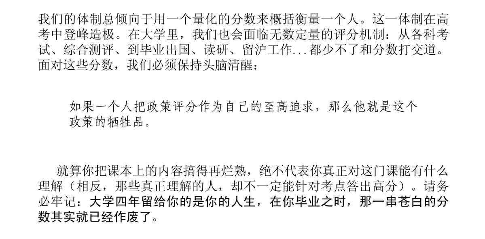
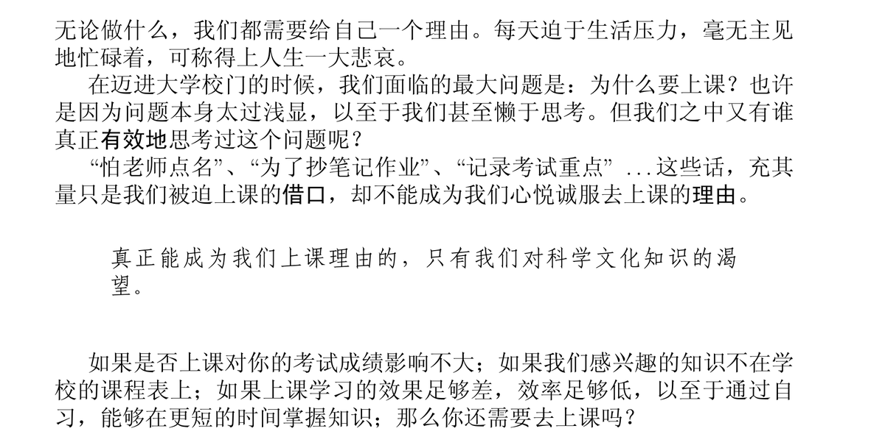
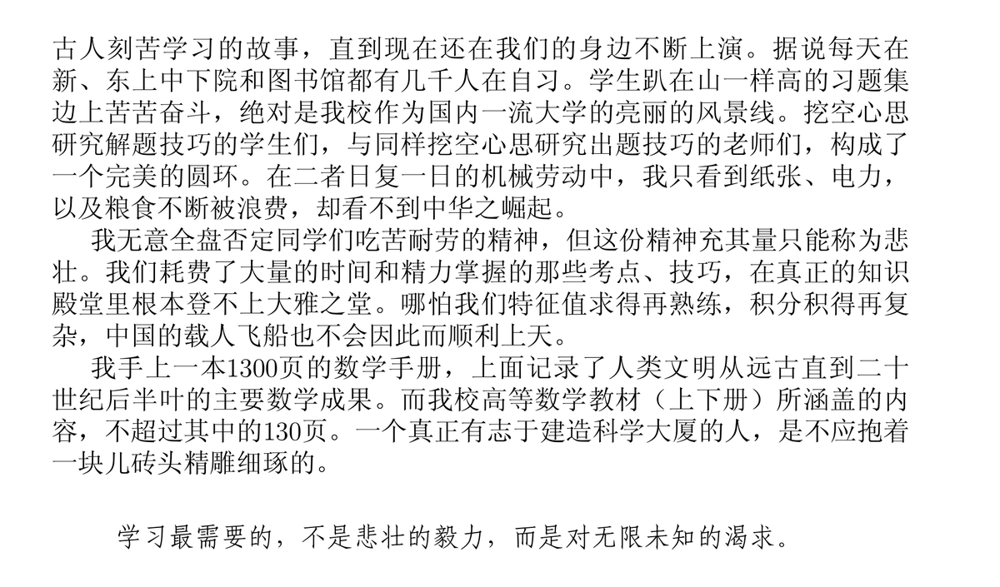

空光
@Vo1dLight
@mario_2333 > 在本书的开始，我不得不遗憾地告诉大家一个消息。国内绝大部分大学的本科教学，不是濒临崩溃，而是早已崩溃。



🍭Mario🐈
@mario_2333
话说，虽然是一个很古老的东西，但是咱强烈推荐所有大学生阅读《上海交通大学生存手册》，2008年的原版就是最好的了
咱大一看到的时候感觉很震撼，甚至对一些不屑鄙夷，然后随着对大学的了解，渐渐变成认同和敬佩，常读常新相见恨晚，只能感叹作者认知远高常人
于是放一些精彩摘录，一定要看看🥺 https://t.co/wTj3wrhbfI